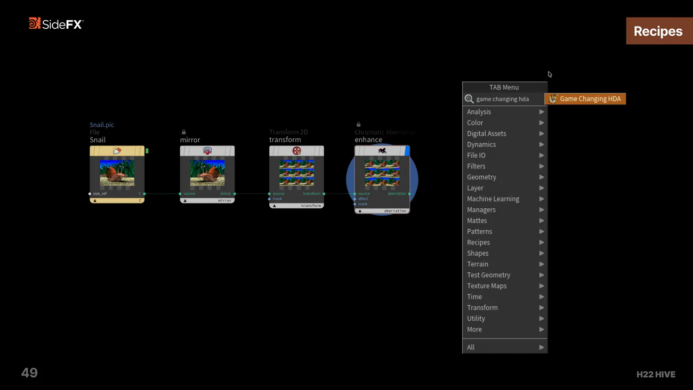

Copernicus で地形を作る — HIVE 講演
出典: H22 - Terrains in Copernicus | Dmitrii Vlasenko | Houdini 22 HIVE （SideFX 公式 Houdini 22 HIVE の講演 / 講演者 Dmitrii Vlasenko さん / Houdini 22 / 32:15 / 英語）。 このページは、上記の動画を見ながら自分用にまとめた日本語の学習メモです。SideFX 公式の翻訳ではありません。
話の流れ
| 時刻 | 内容 |
|---|---|
| 03:40 | フラグを立てるだけで投影できるという話 |
| 07:25 | Height Field Project。ポリゴンをハイトフィールドに変換して入力とブレンド |
| 11:11 | 侵食をスケールを下げながら複数回かける |
| 14:52 | ネットワークが小さいこと。解像度を変えるだけで 4K 地形になる |
| 18:32 | Save Selected Items as a Tool でレシピを保存 |
| 22:15 | 縁を焼けた・風化した見た目にする仕上げ |
| 25:56 | ID をセルに貼り付ける方法（石畳） |
| 29:44 | Q&A: 遠景でのテクスチャの細部管理 |
1. フラグを立てるだけで投影できる
height 出力にオレンジフラグ、テクスチャに青フラグを立てるだけで投影できます。
以前の height field プレビューマテリアルの手順が不要になりました。 講演者の言葉だと「何にでも何でも投影できる」。
準備の手数が減るのは地味に効きます。見ながら作る作業では、 確認のための設定が要らないほうが手が止まりません。
2. Height Field Project — ポリゴンを地形に混ぜる
ポリゴンジオメトリを Copernicus に戻し、ハイトフィールドに変換して入力とブレンドします （ブレンド方法も選べます）。向きのランダム化もできます。
手でモデリングした岩や構造物を、手続き的な地形に馴染ませる、という使い方になります。 「全部プロシージャル」と「全部手作業」の間を埋めるノードだと思います。
3. 侵食はスケールを下げながら複数回かける
これが実務的な話です。侵食をスケールを下げながら複数回かけて馴染ませます。
面白いのはその結果です。それでも strata の線は透けて残ります。 前段で作った sediment も効いています。
ハウツーの地形の回でも 「Terrace の段は侵食しても消えない」という話が出てきましたが、 同じ性質を意図して使っているのがこの講演です。 消えないことを前提に、消えかけた層を残すために侵食を重ねます。
4. ネットワークは小さい
14:52 で強調されています。ネットワークは小さく、すべてプロシージャルなので、 最初に戻って解像度を変えるだけで 4K 地形になります。
ハウツーの回で「解像度を COPnet 側で管理する」という話が出てきましたが、 その運用がそのまま効いている状態です。 下書きは低解像度で組んで、最後に上げる。
5. レシピとして保存する
Save Selected Items as a Tool を使います。
選択したノードが小さなノードグラフとして表示され、 レシピに名前を付けて保存できます。 同一セッション内で Tab メニューに出てきます。

このスライドで Copernicus の Tab カテゴリ一覧も読めます。 どんな道具が揃っているかの見取り図になります。
| Copernicus の Tab カテゴリ |
|---|
| Analysis / Color / Digital Assets / Dynamics / File IO / Filters / Geometry / Group / Layer / Machine Learning / Managers / Mattes / Patterns / Recipes / Shapes / Terrain / Test Geometry / Texture Maps / Time / Transform / Utility |
Recipes と Terrain が独立したカテゴリとしてあるのが分かります。 レシピは「便利機能」ではなく、最初から想定された使い方だということです。
6. 仕上げ — 縁を焼く
22:15 で最後にもう1つノイズを通し、 ハイトフィールドの縁を選んで焼けた・風化した見た目にし、 Bright ノードで仕上げます。
講演者の言葉で「短いノードチェーンでここまで行ける」とまとめられています。
7. ID をセルに貼り付ける（石畳）
25:56 からの話です。ID をセルに貼り付けることで、 石畳のセルを正確に表現しつつ、入力解像度が変わっても均一に保てます。
これが重要なのは、解像度を後から上げる運用と噛み合うからです。 セルの数がピクセル数に依存してしまうと、4K にしたときに石の大きさが変わってしまいます。 ID として持てば、解像度と独立します。
8. Q&A — 遠景の細部管理
複数のハイトフィールドを作ってブレンドする。
そして石畳のレシピはそのまま上に重ねられます。 レシピ化しておく意味が、ここで回収されています。
この講演から持ち帰るもの
- height にオレンジ、テクスチャに青のフラグを立てるだけで投影できます。プレビューマテリアルの手順は不要になりました
- Height Field Project でポリゴンを地形に混ぜられます。手作業と手続きの間を埋められます
- 侵食はスケールを下げながら複数回。それでも
strataの線は透けて残ります - ネットワークは小さく、解像度を変えるだけで 4K になります
- Save Selected Items as a Tool でレシピ化でき、同一セッション内で Tab に出ます。Tab には Recipes カテゴリが最初からあります
- ID をセルに貼り付けると、入力解像度が変わっても石畳の大きさが変わりません
- 遠景は複数のハイトフィールドをブレンド。レシピはそのまま上に重ねられます
この講演で「何ができるか」を見て、 Copernicus で地形を作る回と Solaris でレンダリングする回で手を動かすのが良い順番だと思います。